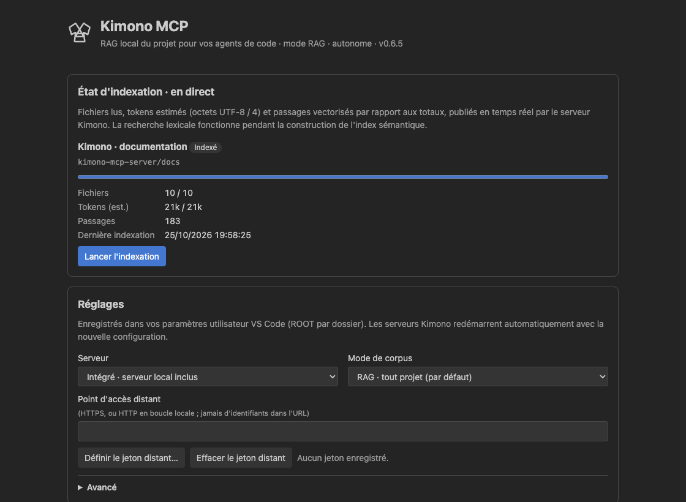
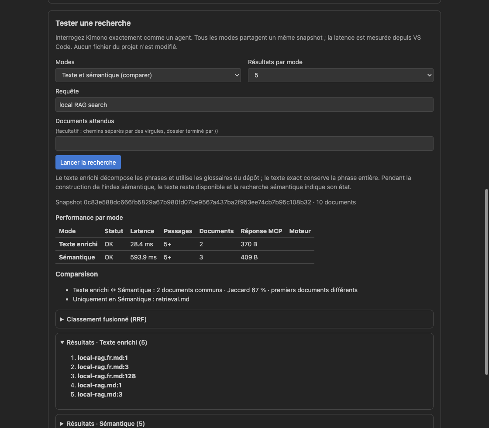
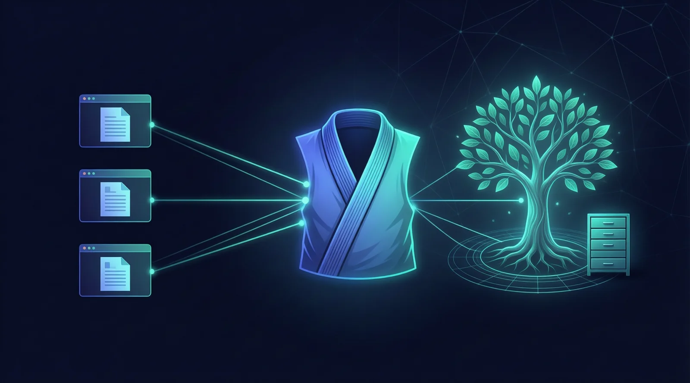
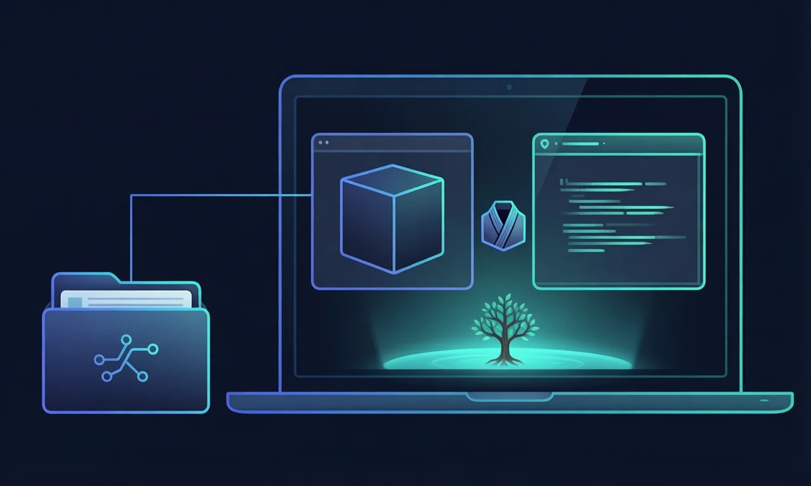

Moins chercher, plus avancer
Retrouvez une règle métier, une configuration ou le code d'une fonctionnalité sans ouvrir une succession de fichiers à la main.
Votre assistant n'a pas besoin de tout lire pour vous aider. Kimono retrouve les passages utiles dans votre code et vos documents, pour qu'il se concentre sur votre question plutôt que sur des fichiers entiers.
Moins de contexte inutile pendant la recherche, moins d'attente pour avancer. Utilisez Kimono avec votre assistant habituel, sur un projet existant ou sur votre Memory Bank AI-KIDO.
Extension disponible sur la Visual Studio Marketplace · Recherche locale · Vos fichiers restent inchangés en mode RAG
Avant de répondre ou de préparer une modification, un assistant explore le projet. Kimono cible cette phase : retrouver les bonnes sources, puis ne lire que ce qui aide réellement à avancer.
Retrouvez une règle métier, une configuration ou le code d'une fonctionnalité sans ouvrir une succession de fichiers à la main.
Kimono indique les emplacements pertinents. L'assistant récupère ensuite les passages nécessaires, plutôt que d'accumuler des fichiers entiers dans la conversation.
Rendez votre code, vos documents et vos connaissances AI-KIDO plus faciles à retrouver. La méthode organise la mémoire ; Kimono aide vos assistants à l'exploiter.
Deux tâches, un même corpus et un même modèle : comparaison entre la recherche standard de Copilot et Kimono RAG. Le gain porte ici sur le contexte d'entrée cumulé et le temps écoulé, pas sur une estimation de facture.
| Phase de travail | Tokens d'entrée cumulés | Réduction des tokens | Temps écoulé | Réduction du temps |
|---|---|---|---|---|
| Comprendre l'indexation et les règles d'exclusion | 323 368 → 105 223 | −67,5 % | 111,212 s → 79,077 s | −28,9 % |
| Préparer un plan d'implémentation | 454 796 → 130 244 | −71,4 % | 175,224 s → 84,034 s | −52,0 % |
Gemini 3.8 Flash · Copilot CLI 1.0.103 · RAG lexical local · 51 fichiers identiques · Un essai par méthode et par tâche. Les tokens d'entrée sont cumulés sur les requêtes au modèle, y compris les tokens lus depuis le cache. Consulter le protocole et les résultats détaillés.
Moins de contenu non pertinent envoyé au modèle, c'est un levier pour maîtriser la consommation pendant les phases d'exploration. Mesurez-le sur vos propres tâches et vos modèles.
Sur ces essais, les appels d'outils passent de 22 à 8 pour la recherche et de 30 à 8 pour le plan. L'assistant consacre moins d'échanges à retrouver le contexte.
Le TCO réunit consommation des modèles, temps de travail, mise en place et exploitation. Kimono agit sur la recherche de contexte ; le gain global reste à évaluer dans votre environnement.
Moins de tokens ne signifie pas automatiquement une facture réduite du même pourcentage. Le coût dépend du fournisseur, du modèle, du cache et de votre abonnement. Le temps et les ressources nécessaires à l'indexation locale doivent aussi entrer dans votre bilan. Ces deux essais ne garantissent pas les mêmes gains sur tous les projets et ne mesurent pas le TCO complet.
Kimono apporte une recherche locale à votre assistant : c'est le principe du RAG, retrouver les bonnes informations avant de répondre. Aucune réorganisation de votre projet n'est nécessaire pour commencer.
Retrouvez le code, les explications et les configurations liés à votre question, même si vous ne connaissez pas le nom du fichier.
Donnez à l'assistant les passages utiles à son analyse et à son plan. Gardez la maîtrise de la suite dans votre environnement de travail.
Le mode AI-KIDO rend accessibles vos connaissances structurées, personas, commandes et workflows pour réutiliser les pratiques de l'équipe.
Une décision dans un compte rendu, un budget dans un tableur, une règle dans une présentation : vos documents font aussi partie du contexte de votre projet.
Recherchez dans le texte des documents Word, des feuilles Excel, des présentations PowerPoint et des PDF pris en charge, sans les convertir manuellement pour l'assistant.
Kimono localise l'information utile et permet d'en lire la représentation textuelle. Vous conservez vos originaux, sans modification.
Lorsqu'un contenu ne peut pas être extrait, son nom, son emplacement et les informations de fichier disponibles peuvent aider à le retrouver. Kimono signale cette limite au lieu d'inventer un contenu.
Fonctions documentaires ajoutées dans la version 0.6.6 : mettez à jour votre installation pour en bénéficier. Le texte des PDF doit être extractible ; les documents scannés peuvent nécessiter une préparation. La recherche respecte les fichiers exclus de votre corpus. Formats pris en charge et guide d'utilisation.
Le panneau de gestion vous permet de vérifier que votre projet est prêt, de choisir votre corpus et de tester une recherche avant de confier une tâche à l'assistant.


Commencez sur un projet que vous connaissez. Vous pourrez comparer les sources retrouvées et décider où Kimono vous fait gagner du temps.
Ajoutez Kimono RAG MCP by AI-KIDO depuis la Marketplace. Les composants nécessaires à la recherche du projet sont inclus.
Accordez-lui votre confiance dans VS Code, puis lancez MCP: List Servers, démarrez Kimono et activez ses outils dans votre assistant.
Demandez où se trouve une fonctionnalité ou comment fonctionne une règle. Ouvrez Kimono: Open Management Panel pour suivre l'indexation et tester la recherche.
Le mode RAG fonctionne sur un projet ordinaire. Pour votre Memory Bank, sélectionnez le mode AI-KIDO dans le panneau et choisissez le dossier de votre base.
VS Code 1.106 ou ultérieur et assistant compatible MCP. Hôtes disponibles : macOS Apple Silicon, Linux ARM64/x64 et Windows x64. En environnement distant, installez l'extension sur l'hôte du projet. Guide d'installation détaillé.
« Avec Kimono, retrouve où sont définies les règles de configuration de ce projet et explique-moi les passages utiles. »
« Avec Kimono, identifie les fichiers concernés par cette évolution et propose un plan à partir des sources retrouvées. »
« Dans notre base AI-KIDO, retrouve la pratique ou le workflow qui correspond à cette tâche. »
Votre assistant doit avoir les outils Kimono activés. Il reste responsable de la réponse et de l'exécution ; vérifiez ses sources et validez les actions comme d'habitude.
Utilisez Kimono localement ou connectez plusieurs assistants à un corpus partagé. Chacun retrouve les mêmes références sans faire circuler de nouvelles copies des documents.

AI-KIDO structure les connaissances et les pratiques. Kimono les rend plus faciles à retrouver. Les plateformes comme Tatami peuvent l'intégrer à leurs espaces de travail ; cette intégration reste un projet distinct de l'extension autonome.
L'extension VS Code est le point de départ le plus simple. D'autres installations permettent de partager un serveur ou d'utiliser un autre assistant compatible MCP.

Installez l'extension et travaillez sur le projet ouvert, sans déploiement de serveur séparé.
Commencer dans VS Code →Un serveur Docker permet de partager un corpus et sa recherche. Votre équipe choisit l'hébergement et les accès.
Guide du serveur partagé →L'installation native permet de connecter un assistant compatible en local. Les intégrations directes dédiées aux CLI LLM sont prévues, pas encore livrées.
Autres modes d'utilisation →Le mode RAG recherche et lit sans modifier votre projet. Votre assistant garde ses permissions habituelles ; Kimono ne décide pas d'actions à votre place.
Définissez les dossiers à indexer et vérifiez les exclusions. L'indexation se fait localement, mais l'assistant peut transmettre les passages retrouvés à son fournisseur de modèle.
Commencez par une tâche récurrente. Comparez le temps, la consommation de contexte et la pertinence des sources avant de généraliser à l'équipe.
Kimono ne détecte pas les secrets dans les contenus. Pour un serveur partagé, faites valider l'hébergement et les accès. Consulter les limites et recommandations.
Installez Kimono, ouvrez votre projet et demandez à votre assistant de retrouver ce dont il a besoin. Observez les sources, le contexte consommé et le temps gagné.